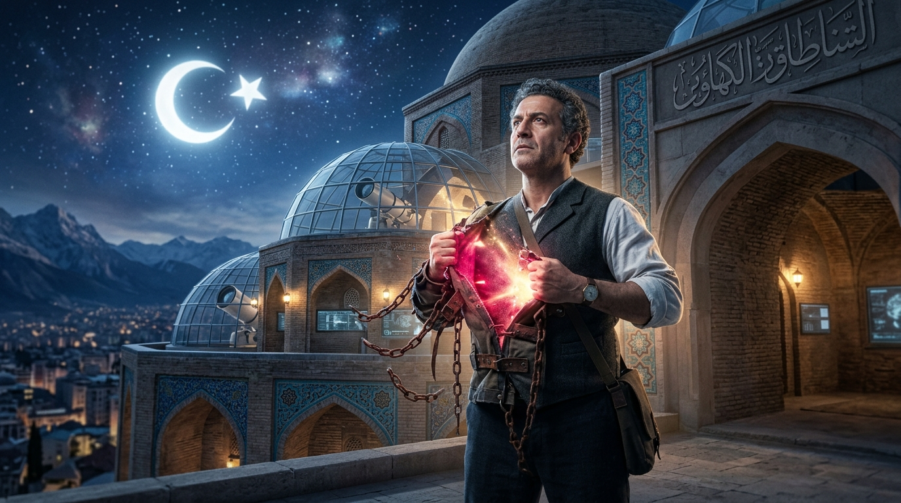
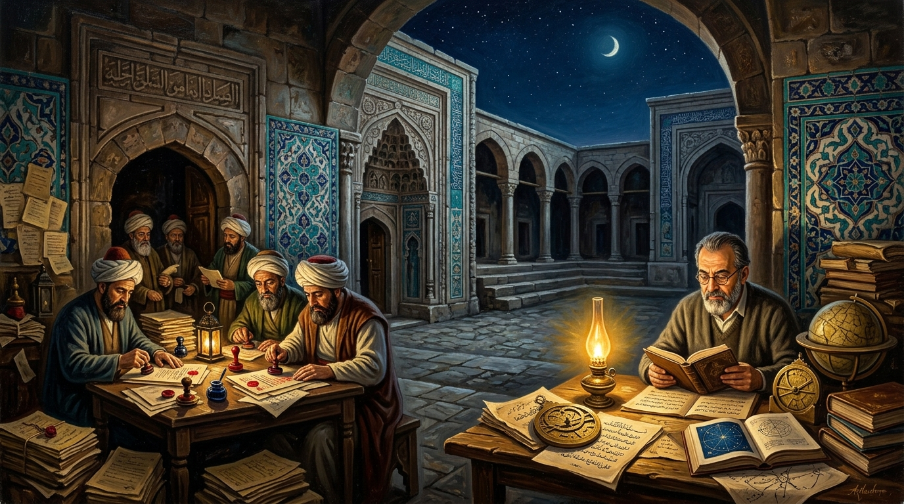
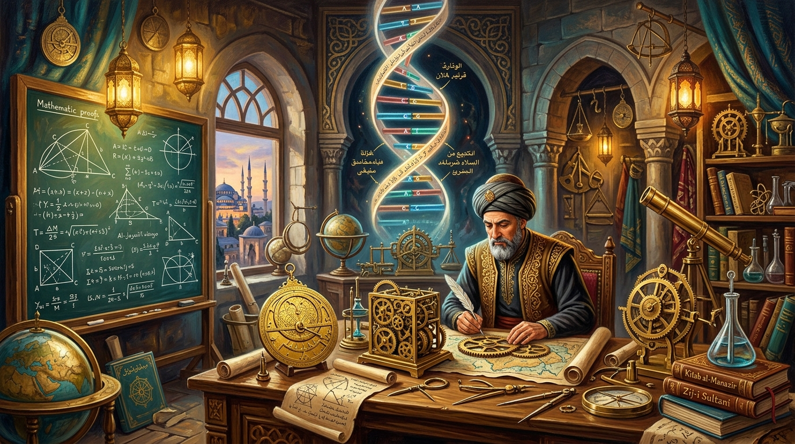
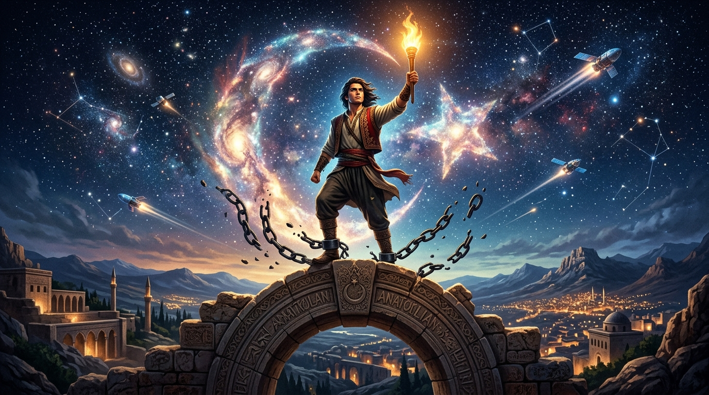

İDRAKİN DELİ GÖMLEĞİ
Üniversite, Tecessüsün Katli ve Teslimiyet Senedi

"İzm'ler idrakimize giydirilen deli gömlekleri. İtibari, samimi olmayan tabular. Kollarımızı bağlayan, bizi birbirimize düşman eden mefhumlar. Düşünceye vurulan zincirler."
# Mesele: Mabedin Çöküşü ve Kurumsallaşan Zihinsel Esaret
İnsan idrakinin en saf, en ele avuca sığmaz itici gücü tecessüstür; yani hakikati arama iştiyakı, doymak bilmez bir anlama, sökme ve sıfırdan inşa etme arzusu.
"Üniversite, hakikatin koşulsuz arandığı bir cemaat olmaktan çıkıp devletin memur ihtiyacını karşılayan bir meslek okuluna veya bürokratik bir aygıta dönüştüğünde kendi ruhunu katleder."
I. Teslimiyet Senedi Olarak Diploma
III. Maarifin İflası: Sararmış Notlar ve Hakiki Maarif

"Mektep diploma tüccarlığına, amfiler memur kışlasına dönmüştür. Hakiki muallim talebesine unvan değil şahsiyet aşılar; talebesinin zihnini sararmış notlara değil kâinatın sırlarına açar."
VI. Milli Bilim Mirası: Cezeri'den Cahit Arf ve Aziz Sancar'a

"Bana Amerika'da 'Sen kimsin, hocana nasıl karşı çıkarsın?' demediler; 'Ne buldun, teorin ne?' dediler. Liyakat ve dürüstlük olan yerde bilim yeşerir."
XII. İstikbal Göklerdedir: Amfilerden Kızıl Elma Ufkuna

Hakiki ilim ve deha, amfilerin mermer duvarlarına kurban edilemez. Mustafa Kemal Atatürk'ün *"İstikbal göklerdedir"* şiarı; Türk gençliğinin amfi vesayetini yırtıp semalara ve bağımsız teknolojiye yürümesini emreder.
XIV. Milli Teknoloji Hamlesi & Dijital Agora
21. yüzyıl Türk mühendisi ve araştırmacısı; amfilerin sararmış notlarına mahkûm değildir. Kendi tezgâhında İHA/SİHA tasarlamakta, LLM modelleri eğitmekte, açık kaynakta küresel standartta üretmektedir.
XV. Özgür Zihnin Yol Haritası: 12 Sarsılmaz İlke
"Kelimeleri rütbelerine göre kabul eden bir cemiyette, hakikat nasıl nefes alsın?"
— Cemil Meriç